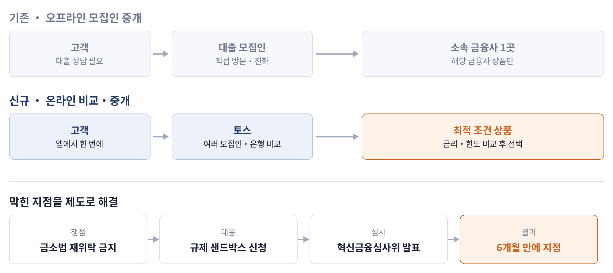

같은 모델로 더 많은 대화 분석

- 한 일
- 대화에 근거해 답하는 서버 분석 기능 출시
- 발견
- 모델 한도로 긴 대화를 한 번에 읽기 어려움
- 개선
- 플랫 텍스트로 입력량을 줄이고 긴 대화는 나눠 병렬 분석
같은 대화의 예상 입력 토큰 약 60% 절감
긴 대화도 하나의 답변으로 통합
대화분석 에이전트가 만든 콘텐츠 중 최고 공유율
25.52%다른 에이전트 평균 3.4% 대비 약 7.5배
사례 보기 → 카카오 / 개인화 메모리 출시AI가 기억할 정보와 바꿀 범위를 지켰는지 평가
94.6%222개 시나리오 반복 평가 중 최고 평균
사례 보기 → 토스 / 대출 신청 과정 개선대출·상담 신청을 끝까지 마친 비율
8배서비스에 들어온 사용자 기준 / 개선 전 대비 / 서비스 매출 28배
사례 보기 → 토스 / 금융사 연동토스에서 대출 조회·신청을 연결한 금융사
22곳신청 후 실제 대출을 받은 비율은 개선 전의 6배
사례 보기 → 토스 / 신규 대출 중개 모델규제 특례 신청부터 지정까지 걸린 기간
6개월온라인 대출 중개 모델을 혁신금융서비스로 지정
사례 보기 → NHN DATA / 부정 광고 매체 관리부정 광고 트래픽을 찾아 줄인 비용
연 1.2억 원비정상 요청이나 클릭이 발생한 매체를 확인해 조치
사례 보기 →일하는 방식
같은 대화의 예상 입력 토큰 약 60% 절감
긴 대화도 하나의 답변으로 통합

홈 이탈 22% 감소
혜택 전환 38% 증가 / 상담 전환 15% 증가

온라인 대출 중개 모델이 혁신금융서비스로 지정
특례 신청부터 지정까지 6개월